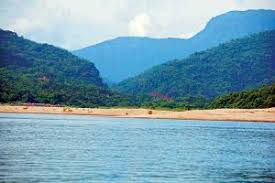

পৃথিবীর সর্বাধিক বৃষ্টিবহুল এলাকা চেরাপুঞ্জির অবস্থান ভারতের পাহাড়ী রাজ্য মেঘালয়ে। ধলাই নদীর উজানে এ রাজ্যের অবস্থান। খাসিয়া জৈন্তিয়া পাহাড় ঘেরা এ রাজ্যের দৃশ্য বড়ই মনোরম।
[৪] ভোলাগঞ্জ রোপওয়ে এলাকায় অবস্থান করে পাহাড় টিলার মনোরম দৃশ্যাবলি অবলোকন করা যায়। বর্ষাকালে চেরাপুঞ্জির বৃষ্টির পানি ধলাই নদীতে পাহাড়ী ঢলের সৃষ্টি করে।
গ্রীষ্মকালে অনেকে =ধলাই নদীকে মরা নদী হিসাবে অভিহিত করলেও বর্ষাকালে নদীটি ফুলে ফেঁপে উঠে।[৩] ধলাই নদীর মনোলোভা রূপ, সবুজ পাহাড় বন্দী এলাকা জুড়ে অজস্র সাদা পাথর,
আকাশের নীল ছায়া রেখে যায় পাথরে জমে থাকা স্ফটিক জলে।
দূরের পাহাড়গুলোর উপর মেঘের ছড়াছড়ি, সাথে একটা দুটো ঝর্ণার গড়িয়ে পড়া। নদীর টলমলে হাঁটু পানির তলায় বালুর গালিচা।
চিক চিক করা রূপালী বালু আর ছোট বড় সাদা অসংখ্য পাথর মিলে এ যেন এক পাথরের রাজ্য। প্রকৃতির খেয়ালে গড়া নিখুঁত ছবির মত সুন্দর এই জায়গাটির নাম ভোলাগঞ্জ।

বৈচিত্র্য
বসন্ত এলে দুহাজার শিমুল গাছ ফুলে ফুলে ভরে ওঠে। ফাগুনের অরুণ আলোয় ফোটে বাগানের শিমুল ফুলগুলো।
চোখের তৃষ্ণা মেটাতে টাঙ্গুয়ার হাওর, মেঘলয় পাহাড়ের পাদদেশে ও রূপের নদী যাদুকাটার মধ্যস্থলের বিশাল শিমুল বাগানে ফুটে ওঠা টুকটুকে লাল শিমুল
ফুলগুলো দেখতে প্রতিদিন দেশের বিভিন্ন প্রান্ত থেকে ছুটে আসছেন শত শত পর্যটক।
বসন্তের দুপুরে পাপড়ি মেলে থাকা শিমুলের রক্তিম আভা মন রাঙায় তো বটেই, ঘুম ভাঙায় শৌখিন হৃদয়ের। এ যেনো কল্পনার রঙে সাজানো এক শিমুলের প্রান্তর।
ওপারে ভারতের মেঘালয় পাহাড়, মাঝে যাদুকাটা নদী আর এপাড়ে শিমুল বন। সব মিলে মিশে গড়ে তুলেছে প্রকৃতির এক অনবদ্য কাব্য।